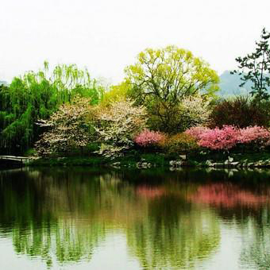
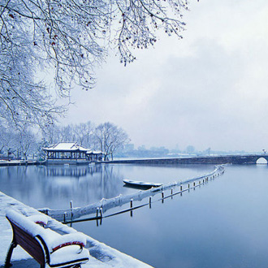
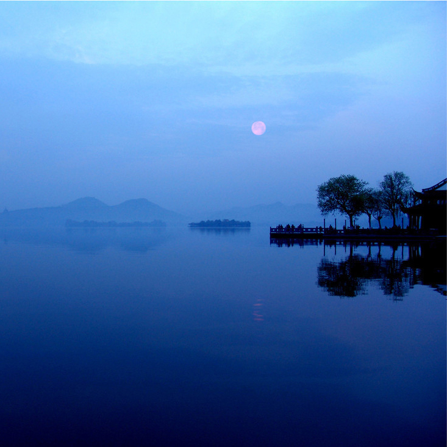
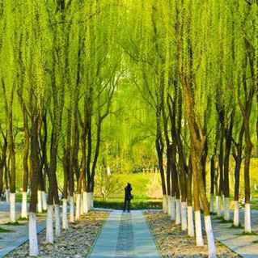
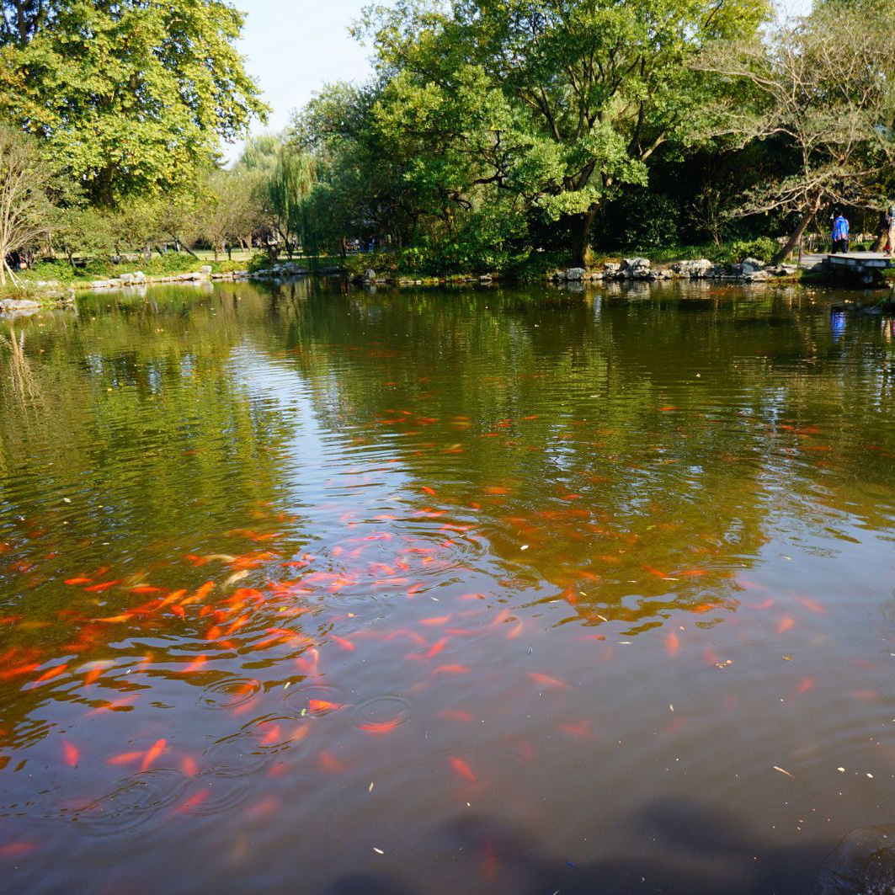
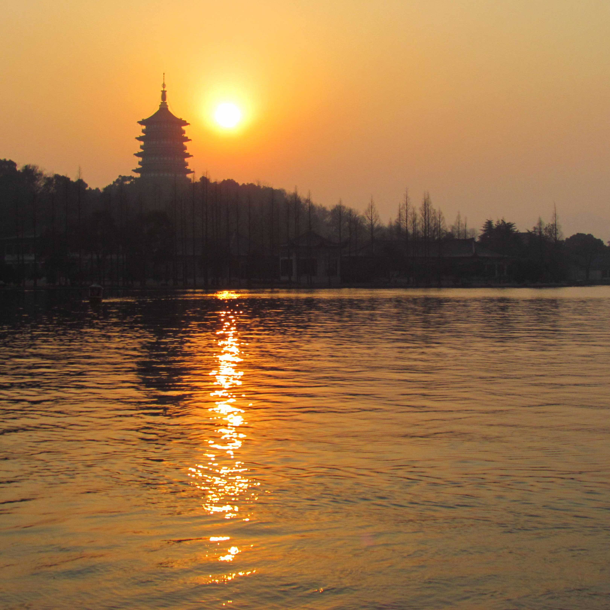
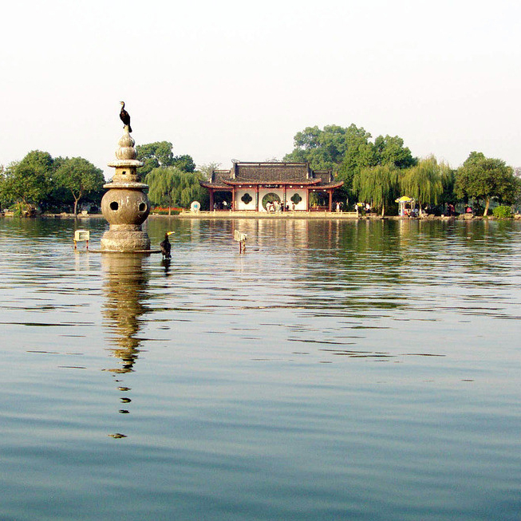

Spring Dawn at Su Causeway
Su Di Chun Xiao
Su Shi, an outspoken official as well as a renowned painter, poet and art theorist, was made prefect of Hangzhou in 1089 during the Northern Song Dynasty. By that time, West Lake had shrunken to half its previous size due to increased land usage around the lake and was choked with weeds.
To prevent the famous lake from degrading into a swamp, Su Shi had it dredged and the sediment pulled from the lake to form into Su Causeway. Su Causeway is made up of small islands connected by bridges that crosses the entire lake from north to south to give locals another way of enjoying the lake. Sunrise reveals the serene scene of Dawn Over Su Causeway in Spring that inspired painters and poets with the trees planted along the causeway in full spring bloom swaying in the wind.
Lotus in the Breeze at Crooked Courtyard
Qu Yuan Feng He
The emperors of the Southern Song Dynasty had their brewery, Quyuan, close to the bank of West Lake. Later as the dynasty went to an end, the place went into disrepair, and by Kangxi's time the Scent of the Quyuan Brewery and Lotuses on the Wind was long gone. Kangxi then moved the scene moved to a close bridge, had a pavilion established and stelae erected on the lake's northwest side to represent the scene.
Until today lotuses still bloom at the spot. When the gentle summer breeze blew through, people can still see the same beautiful scenery ancients saw back then.
Melting Snow on Broken Bridge
Duan Qiao Can Xue
located at the eastern end of the Bai Causeway, Broken Bridge gives a open sight due to its high terrain and therefore is one of the best places for snow viewing. Visitors can also view the bridge from Baoshi mountain -- a mountain close to the bridge. When the bridge is covered by the snow and as the sun come up, the snow on the arched midlle part of the bridge will melt, leaving the two ends still covered. When visitors see the bridge at this time from Baoshi Mountain down, the bridge looks as if it is broken, and thay is how the bridge got its name.
Even when there is no snow, the bridge still looks pretty. As one of the moust famous tourist hot spots among West Lake area, it is always crowded with visitors.
Autumn Moon over Calm Lake
Ping Hu Qiu Yue
Traditionally, viewing the autumn moon over West Lake was a sight without a designated spot. People just took boats on the lake to see the autumn moon during the night. However, there was a pavilion located in southeastern part of Gu Shan that allowed visitors to view the lake. Later in Qing Dynasty emperor Kangxi made the pavilion as the official location for Autumn Moon over Calm Lake.
During the night, be on the boat in the middle of the lake with the big bright moon on the sky, visitors can have a perfect relaxing night at Autumn Moon over Calm Lake.
Listening to Orioles Singing in the Willows
Liu Lang Wen Ying
The rather poetically named Listening to Orioles Among the Billowing Willows, also translated as Orioles Singing in the Willows, was once the Southern Song Imperial Garden. Other than williows, the park is also filled with all kinds of floras.
It's a park made perfectly for people to stroll along the cobblestone walkways as orioles singing and flying through willow-shaded gardens. The park locates at the West Lake's east bank.
Fish Viewing at the Flower Pond
Hua Gang Guan Yu
Fish Viewing at the Flower Pond was once part of the private garden of a Southern Song government official. The official made a Flower Harbor on the lake's southwestern side that blooms throughout the spring and summer. He also put various kinds of fish in the pond to make the garden more alive. Later through the history, it gradually became a famous tourist spot. It was even a particular favorite for Emperor Qianlong in Qing Dynasty.
Today, watching the Fish at Flower Harbor happens at the garden's Red Carp Pond where fish crowding to the surface to snap up food become very popular and can be reflected by the crowded tourists on the waters edge hoping to snap a picture.
Leifeng Pagoda in the Sunset
Lei Feng Xi Zhao
The original pagoda was built in 975 AD at the order of King Qian Chu (born Qian Hongchu) of Wuyue to celebrate the birth of his son during Five Dynasties and Ten Kingdoms period. It was an octagonal, five-storey structure built of brick and wood and with a base built out of bricks. During the Ming dynasty, it was burned by Japanese pirates, leaving only the brick skeleton, as can be seen from Ming paintings of the West Lake. Later, due to a rumor that the bricks from the tower could repel illness, many people started stealing bricks from the tower. Finally on a afternoon of 1924, the pagoda collapsed. The Hangzhou government decided to rebuild the pagoda in 1999 and it reopened in 2002
Not only has a rich history, the pagoda also looks especially beautiful when surrounded by the golden hues of the setting sun.
Three Pools Mirroring the Moon
San Tan Ying Yue
Three Pools Mirroring the Moon is actually an isle in the center of west lake scenic area. The architecture on the isle is quite delicate and marvelous. The flowers are diverse in four seasons.
On the south side of the water, there are three small size stone pagodas standing on the water. The pagodas share a height of 2 meters above the water, and body part is empty and comprised of five round holes. In the moonlit night, it is the best time to view 32 moons on the water, and it is also the greatest occasion to inspire travelers on poem creation.